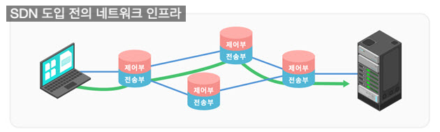
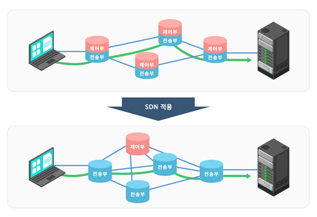
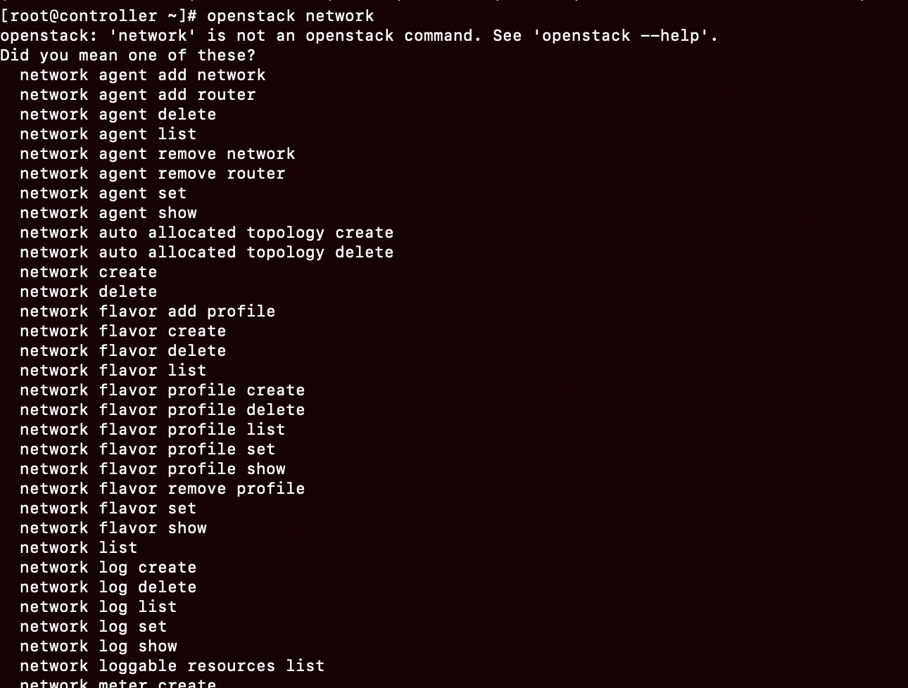
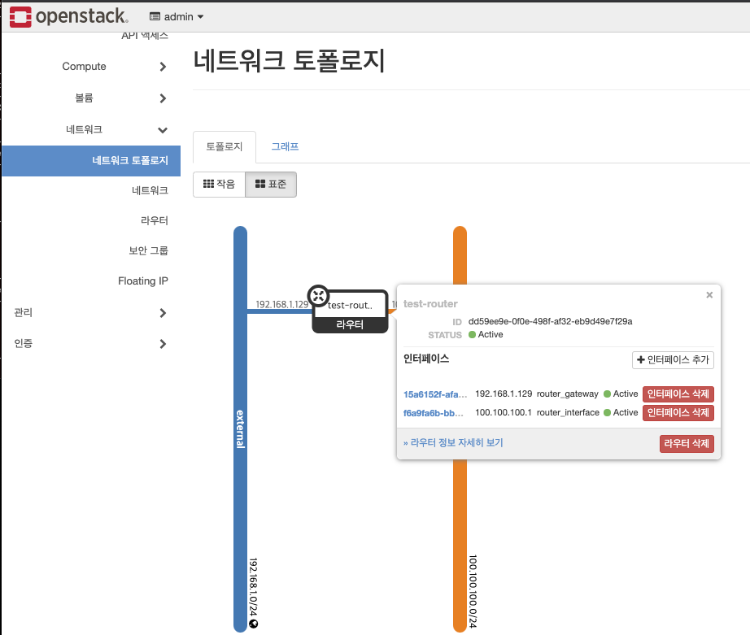
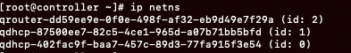
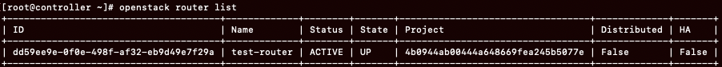
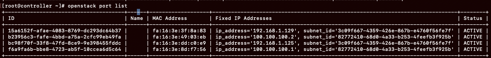

오픈스택 네트워크 구조
0) SDN Software-Defined Networking
0) SDN
Software-Defined Networking
기존의 네트워크 인프라가 가지고 있던 문제를 해결하기 위해서 나온 개념.

기존의 네트워크 인프라를 구성하는 네트워크 장비들은 하나의 장비에 HW OS APP이 모두 들어가
있었기 때문에 장비 하나하나가 복잡한 기능을 모두 가지고 있었고 장비 자체의 사양도 높아야 했다.
그러다보니 장비마다 비용도 비싸지고 장비를 하나하나 설정해야하는 문제점들이 있었다.

그래서, SDN은 기존의 장비의 HW와 OS APP 부분을 분리하여
장비 하나하나는 HW부분만을 담당하고
SW적인 부분은 중앙의 컨트롤러에서 제어한다.
중앙 컨트롤러에서 모든 것을 제어 하기 때문에 네트워크 인프라의 변경이나 확장에 좀 더 유연하게
대처할 수 있다.
1) Neutron 프로젝트
오픈스택에서 네트워크 서비스를 생성 및 관리하는 프로젝트
사용자는 Neutron API를 통해 Neutron Plugin에게 사용자 요청을 전달
2) Neutron Plugin
Neutron에서 가장 많이 사용되는 플러그인은 OVS(Open vSwitch)와 Linuxbridge이다.
해당 플러그인들은 효율적으로 패킷을 포워딩하기 위한 가상의 네트워크 스위치이다.
아이스하우스 이후 버전에서는 OpenvSwitch와 Linuxbridge를 직접 사용하는 일이 없어진 대신
ML2의 3rd Party Plugin으로 대체되었다.
3) 네트워크 관련 명령어
(1) 네트워크 확인
openstack network list

Neutron API
(2) 네트워크 정보 조회

openstack network show [네트워크 이름]
(3) 라우터 정보 조회
ip netns

(4) 라우터의 자세한 정보 조회
ip netns exec [라우터이름] [리눅스 명령어]
netstat -r
arp -an
ifconfig
ping
(5) 네트워크 생성
openstack network create --provider-network-type [타입] [네트워크 이름]
(6) 서브넷 생성
openstack subnet create --network [네트워크 이름] --gateway [GW주소] --subnet-range [서브넷 범위] [서브넷 이름
(7) 라우터 목록 확인
openstack router list

(8) 라우터 정보 조회
openstack router show [라우터 이름]
(9) 라우터에 서브넷 추가
openstack router add subnet [라우터 이름] [서브넷 이름]
(10) 포트 생성
openstack port create --network [네트워크 이름] --fixed-ip subnet=[서브넷 이름] [포트 이름]
(11) 포트 확인
openstack port list

* openstack 포트 여러개 있는 이유 : 포트 하나 죽으면 바로 다른 포트 대체될 수 있게 준비된 것.
(12) 라우터에 포트 추가
openstack router add port [라우터 이름] [포트 이름]
4) fixed-ip와 floating-ip
Fixed IP : 원래는 인터넷에 연결하기 위해 KT, SK, LG와 같은 인터넷 서비스 업체로부터
제공받는 공인 IP를 의미한다.
하지만 클라우드에서는 클라우드 내에서 생성한 가상머신에 할당되는 내부 IP를 의미한다.
Floating IP : 클라우드 내의 가상머신이 인터넷 외부망과 연결되기 위해 배정 받는 IP를 의미한다.
5) 보안 그룹
인스턴스에 대한 인바운드 및 아웃바운드 트래픽을 제어하는 가상의 네트워크 방화벽.
하나의 인스턴스에 여러 개의 보안 그룹 적용도 가능